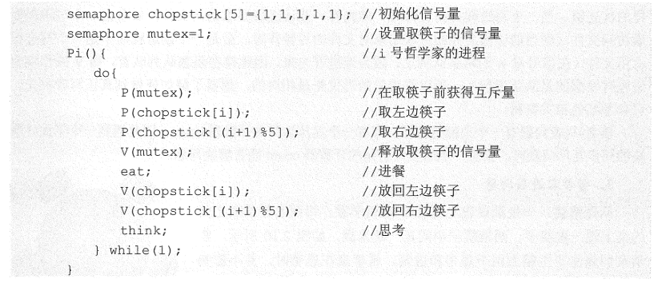
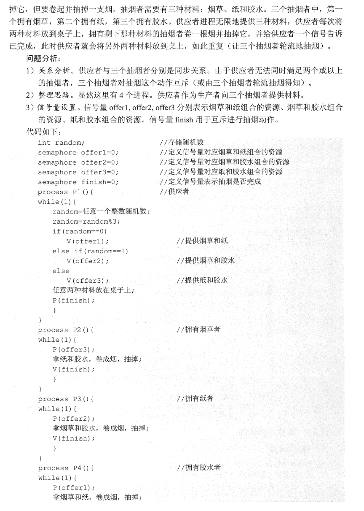
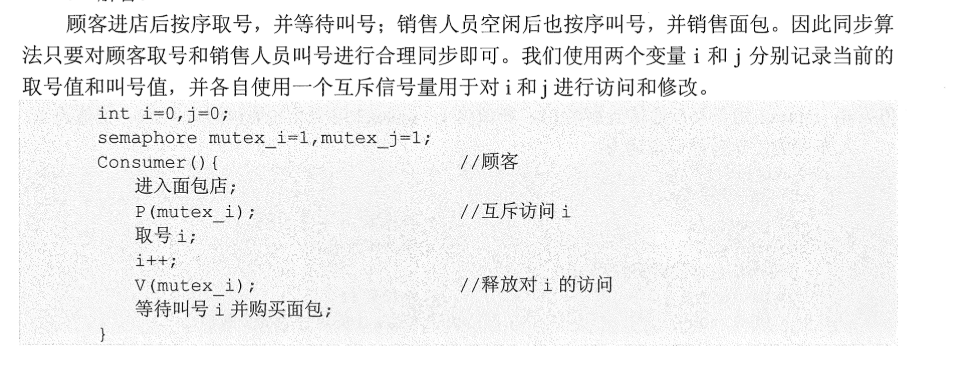
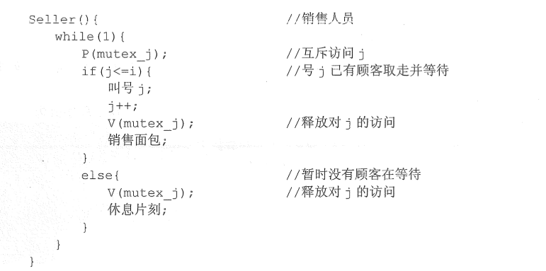

进程同步
发布时间 : 2020-11-09 23:58
字数:1.3k
阅读 :
经典同步问题 1.生产者-消费者问题
问题描述：
问题分析：
1）关系分析：生产者和消费者对缓冲区互斥访问是互斥关系，同时生产者和消费者又是一个相互写作的关系，只有生产者生产之后，消费者才能消费，它们是同步关系
2）整理思路：
解决的是互斥和同步的PV操作
3） 信号量设置：
信号量mutex作为互斥信号量，用于控制互斥访问缓冲池，互斥信号量初始为1 ；信号量full用于记录当前缓冲池中满缓冲区数量，初始为0，信号量empty记录空缓冲区数量初始为n
1 2 3 4 5 6 7 8 9 10 11 12 13 14 15 16 17 18 19 20 21 22 23 24 semaphore mutex=1 ; semaphore empty=n; semaphore full=0 ; producer(){ while (1 ){ produce an item in nextp ; P(empty); P(mutex); add nextp to buffer; V(mutex); V(full); } } comsumer() { while (1 ){ P(full); P(mutex); remove an item from buffer V(mutex); V(empty); consume the item } }
复杂的生产者-消费者问题
问题分析：
1)关系分析：
爸爸妈妈是互斥惯性系，爸爸和女儿，妈妈和儿子是同步关系
2)整理思路：
两个生产者和两个消费者连接到大小为1的缓冲区上
3）信号量设置：
plate设置为互斥信号量，表示是否允许向盘中放入水果，初始为1 表示允许放入，且只允许一个。
信号量apple表示盘中是否有苹果
同理orange
1 2 3 4 5 6 7 8 9 10 11 12 13 14 15 16 17 18 19 20 21 22 23 24 25 26 27 28 29 30 31 32 33 34 35 36 37 38 39 40 41 semaphore plate=1 ,apple=0 ,orange=0 ; dad() { while (1 ) { prepare an apple ; P(plate); put an apple on the plate; V(apple); } } mom() { while (1 ) { prepare an orange ; P(plate); put an orange on the plate; V(orange); } } son() { while (1 ) { P(orange); take an orange from the plate; V(plate); eat } } daughter() { while (1 ) { P(apple); take an apple from the plate; V(plate); eat } }
dad()和daughter()，mom()和son()必须连续执行，只能在女儿拿走苹果或儿子拿走橘子后才能释放盘子即V(plate)操作
2.读者写者问题
问题分析：
1)关系分析
读者和写者是互斥的，写者和写者也是互斥的
2）整理思路
写者和任何进程互斥，即信号量的PV操作即可解决
关于读者，用一个计数器，判断当前是否 有读者读取文件，当有读者时，写者无法写文件，此时读者会一直占着文件。当没读者时，写者才可以文件。不同读者对计数器的访问应该是互斥的
3）信号量设置
count–当前读者的数量
mutex 互斥信号量，保护count变量更新
rw保证读者与写者之间的互斥
1 2 3 4 5 6 7 8 9 10 11 12 13 14 15 16 17 18 19 20 21 22 23 24 25 26 27 28 29 int count=0 ;semaphore mutex=1 ; semaphore rw=1 ; witer() { while (1 ) { P(rw); write; V(rw); } } reader() { while (1 ) { P(mutex); if (count==0 ) P(rw); count++; V(mutex); read P(mutex); count--; if (count==0 ) V(rw); V(mutex); } }
写进程可能因为长时间等待饿死qwq
若希望写进程优先，即当有读进程在读共享文件时，有写进程请求访问，这时应禁止后续的请求，等到已在共享文件的读进程执行完毕，立即让写进程执行，只有在无写进程执行的情况下才允许读进程再次允许
为此，在上述程序基础上writer()和read()添加一对PV操作
1 2 3 4 5 6 7 8 9 10 11 12 13 14 15 16 17 18 19 20 21 22 23 24 25 26 27 28 29 30 31 32 33 34 35 36 int count=0 ;semaphore mutex=1 semaphore rw=1 ; semaphore w=1 ; writer() { while (1 ) { P(w); P(rw); writing; V(rw); V(w); } } reader() { while (1 ) { P(w); P(mutex); if (count==0 ) { P(rw) } count++; V(mutex); V(w); reading P(mutex); count--; if (count==0 ) V(rw); V(mutex); } }
3.哲学家进餐问题
问题分析：
1）关系分析 5名哲学家和左右邻居对其中间的筷子的访问时互斥关系
2）整理思路：
3）信号量：
互斥信号量数组 chopstick[5]={1,1,1,1,1}
对5个筷子的互斥访问
哲学家编号为0-4
哲学家i左边的筷子编号为i
哲学家右边筷子的编号为（i+1)%5
当一个哲学家左右筷子都可用时才允许其抓起筷子

4. 吸烟问题 


转载请注明来源，欢迎对文章中的引用来源进行考证，欢迎指出任何有错误或不够清晰的表达。可以在下面评论区评论，也可以邮件至xuwenkai13@gmail.com